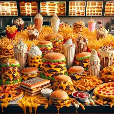

Bonjour
Ceci est un paragraphe
Voici un second paragraphe
Mayotte fleurie
Mayotte (en mahorais : Maoré), officiellement nommée département de Mayotte, est une collectivité territoriale unique[2] d'outre-mer, regroupant les compétences d'une région et celles d'un département, dirigée par le conseil départemental de Mayotte.
Sur le plan géographique, Mayotte fait partie de l'archipel des Comores, dans le Nord du canal du Mozambique (océan Indien) et au nord-ouest de Madagascar[3],[4],[5],[6],[7]. Mayotte est constituée de deux îles principales, Grande-Terre et Petite-Terre, et de plusieurs autres petites îles dont Mtsamboro, Mbouzi et Bandrélé[8]. Son code départemental officiel est « 976 »[9]. Depuis août 2023, le chef-lieu du territoire est Mamoudzou, sur Grande-Terre, qui est aussi la ville la plus peuplée de Mayotte (c'était auparavant Dzaoudzi, situé en Petite-Terre)[10],[11],[12]. Le siège du conseil départemental et les services administratifs de la préfecture sont tous deux à Mamoudzou[6]. Du fait de son statut de département et région d'outre-mer, Mayotte est également une région ultrapériphérique de l'Union européenne[13]. Ses habitants sont appelés les Mahorais et les langues locales sont le mahorais (shimaoré) et le shibushi.
Le 25 avril 1841, sous le règne de Louis-Philippe Ier, le dernier sultan de Mayotte Andriantsoly, menacé par les royaumes voisins, vend son île au royaume de France en échange de sa protection. En 1848, l'île intègre la République française. En 1886, la France établit un protectorat sur le reste de l'archipel des Comores, composé de la Grande Comore, Mohéli et Anjouan qui se retrouvent placées sous la direction du gouverneur de Mayotte. Toutefois, à partir de 1958, l'administration du territoire quitte Mayotte pour Moroni (en Grande Comore), ce qui provoque le mécontentement des Mahorais, qui réclament la départementalisation.
Dans les années 1960 et 1970, Zéna M'Déré et le mouvement des chatouilleuses militent pour le rattachement définitif de Mayotte à la République française. En 1974, la France organise sur l'ensemble de l'archipel des Comores, une Consultation pour que les populations de l'archipel décident d'une éventuelle indépendance, mais les Mahorais ne votant qu'à 36,78 % pour l'indépendance, l’État français décide finalement de considérer le résultat île par île. Une seconde consultation est organisée par la France uniquement à Mayotte en 1976[14],[15], qui confirme largement ce choix de la population de demeurer française, au contraire des trois îles qui formeront la République des Comores[16]. À la suite du référendum de 2009[17], Mayotte devient département et région d'outre-mer (DROM) à assemblée délibérante unique : le conseil départemental exerce également les compétences d'un conseil régional en 2011[18]. En 2014, Mayotte change également de statut au niveau européen, devenant une région ultrapériphérique[19], et fait depuis partie de l'Union européenne. L'État Comorien revendique toujours la souveraineté sur Mayotte depuis son indépendance[20],[21].
Régiment du service militaire de mayotte
Historique
Il est implanté à Combani à environ 30 minutes en voiture de Mamoudzou, au cœur de la Grande Terre. Il est constitué alors, par une compagnie du 4e RSMA de La Réunion. En 1991, il portait le nom de Détachement du service militaire adapté de Mayotte (DSMAM). Le détachement devient ensuite autonome et prend le nom d'Unité du service militaire adapté de Mayotte. Formant corps depuis le 1er août 1996, elle devient Groupement du service militaire adapté (GSMA.M) en septembre 2000 puis bataillon du service militaire adapté (BSMA) de Mayotte le 1er juillet 2013[1]. Le 31 mars 2018, il prend l'appellation de régiment du service militaire adapté de Mayotte.
Il comprend un état-major et deux compagnies de formation professionnelle. Le 14 juin 2001, le GSMA de Mayotte hérite du patrimoine du 4e RIMa et reçoit la garde du drapeau[2]. Le 3 juillet 2018 lors de la passation de commandement entre le lieutenant-colonel Dominique Bonte et le lieutenant-colonel Frédéric Jardin, il rend le drapeau du 4e RIMa dont il a la garde et reçoit des mains du général Thierry Deladoucette son nouveau drapeau portant dans ses plis, régiment du service militaire adapté de Mayotte. Le 14 juillet 2018, un détachement du RSMA-My défile derrière son nouveau drapeau et son chef de corps sur les Champs-Elysées.
Mes fruits
fruits et légumes
FruitsComment les chat font pour retomber sur leur pattes ?
C'est une question que tout le monde se pose depuis la nuit des temps , c'est créature remplie de mystère on la capacité extraordinaire de toujours attérire sur leur pattes
Quels est le prénom le plus utilisé ?
Beaucoup de personne s'appelle abdou,bacar ou Mamadou sans oublié Sako et chez les filles on retrouve très souvent des le prénom Fatima, Aminata , Fatou
Quel pays où on retouve les hommes les plus noires ?
En Afrique y'a plein de pays où on peut retrouver ce type d'individus avec de grande diversité culturel .
Dormir ou manger ?
Dans la vie chacun à des besoins mais les quelles es-que on mange mieux avant ou après d'avoir dormi , ou bien dormons mieux après avoir manger ou manger avant d'aller dormir. Le corps humain est fascinant sachant que a l'exeption des chinois nous sommes tous différents avec des réactions différents donc cette question est délicate a répondre .
Qui est le plus entre R2 et Fave ?
chat
ingredient salade
- salade
- oeuf
- tomate
- carotte
Liste d'animaux de companie
- Chat
- Singe
- Loutre
- Tortue
Menu de fastfood
- Burger King
- - Whopper
- - Wrap chicken
- - Big king
- O'tacos
- - O'classic
- - O'chèvre miel
- - O'riginal
- Jefe burger
- - Le Jefe Burger
- - Burger parisien
- - Le Jefe chicken
Voici le lien d'un site mystère
A propos de bacar said
ici Retour sur Mayotte fleurie